6 Harjoitus 5: Paikkatietoaineiston visualisointi ja tekstitys
6.1 Harjoituksen sisältö
Harjoituksessa tutustutaan eri rasteri- ja vektoriaineistoihin ja niiden perusvisualisointitekniikoihin sekä vektoriaineistojen tekstitystoimintoihin.
6.2 Harjoituksen tavoite
Harjoituksen jälkeen opiskelija tuntee eri paikkatietoaineistojen visualisoinnin perustyökalut ja osaa lisätä vektoriaineistoon haluamansa tekstitykset.
6.3 Arvioitu kesto
60 minuuttia.
6.4 Valmistautuminen
Avaa uusi QGIS-projekti (Projekti > Uusi) ja tallenna se nimellä “QGIS-harjoitus 5”. Lisää projektiin seuraavat aineistot: ..kurssihakemisto/MML/Yleiskarttarasteri_1milj.png ..kurssihakemisto/MML/YK_1M/TieViiva.shp ..kurssihakemisto/Natural_Earth/ne_10m_populated_places/ne_10m_populated_places_suomi.shp ..kurssihakemisto/SYKE/Naturakohde_ma.shp
6.5 Rasteriaineistojen visualisointi
Tutustutaan ensin Yleiskarttarasteri_1milj-rasteriaineistoon. Tämä rasteriaineisto on Maanmittauslaitoksen tuottama taustakartta, johon on sisällytetty Suomen tiet, kaupungit ja muita yleiskartan tarkoitusta ajavia aineistoja. Aineistossa käytetty visualisointi on tuttu paperikartoilta. Piilota nyt kaikki muut avaamasi aineistot näkyvistä Tasot-paneelista.

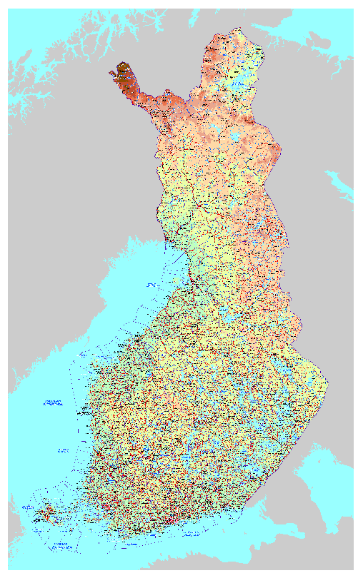
Jos Yleiskarttarasteri_1milj-tason kohdalla näkyy -ikoni, tulee aineistolle määrittää koordinaattijärjestelmä. Klikkaa tason kohdalla hiiren oikeaa painiketta ja valitse Ominaisuudet…, jolloin QGISiin avautuu Tason ominaisuudet -ikkuna. Tästä ikkunasta löydät tason ominaisuudet jaoteltuna aihekohtaisesti.
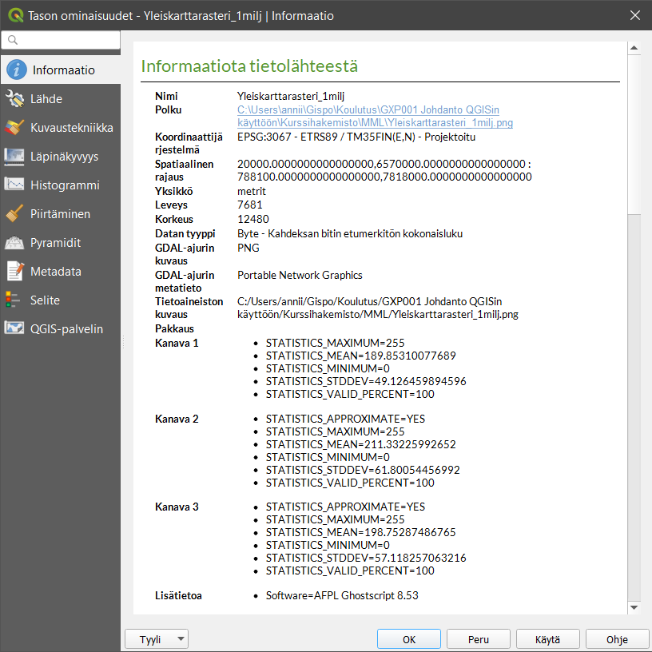
Valitse ikkunasta Lähde-välilehti, josta löydät tiedot aineiston koordinaattijärjestelmästä. Voit huomata, että Aseta koordinaattijärjestelmä -alasvetovalikon kohdalla lukee virheellinen projektio. Klikkaa vieressä olevaa Valitse koordinaattijärjestelmä -painiketta ja aseta tason koordinaattijärjestelmäksi ETRS89/TM35FIN (EPSG:3067). Paina lopuksi OK ja OK. Aineisto on nyt projisoitu valittuun koordinaattijärjestelmään.
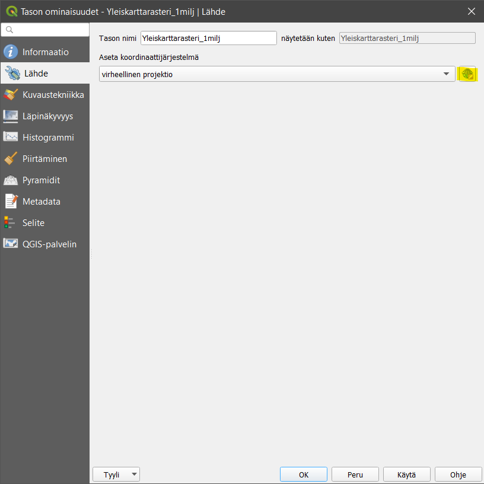
Psst! Muista tarkistaa myös projektin koordinaattijärjestelmä!
Mene takaisin Tason ominaisuudet -ikkunaan ja valitse nyt Kuvaustekniikka-välilehti. Pääset muokkaamaan tason tyyliominaisuuksia tästä välilehdestä. Voit avata saman välilehden myös suoraan näkyviin QGIS-työtilaasi valitsemalla päävalikosta Näytä > Paneelit > Kuvaustekniikka tai pikanäppäimellä F7.
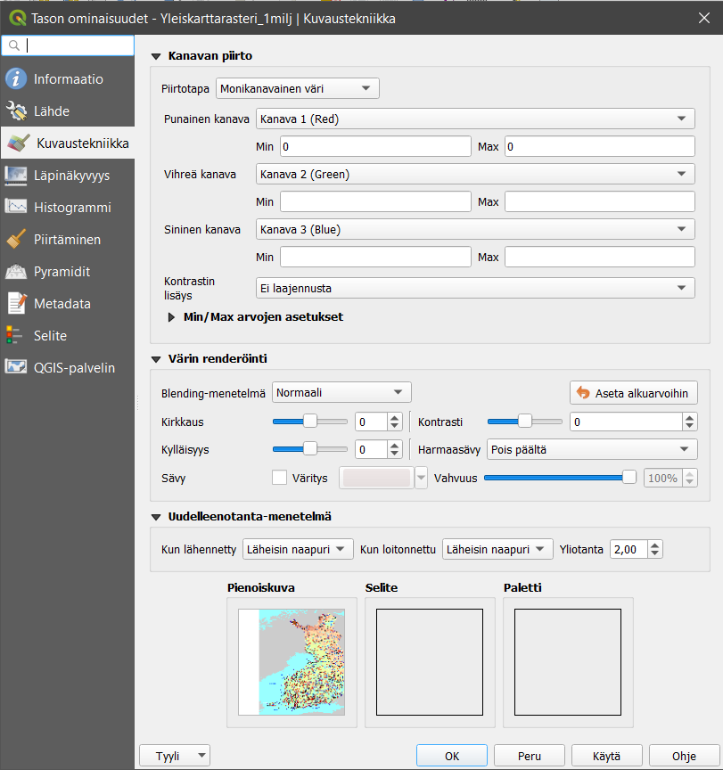
Kanavan piirto sisältää erilaisia rasteriaineistojen visualisointikeinoja, esimerkiksi Monikanavainen väri -visualisointitavassa käytetään kolmea eri näkyvän valon kanavaa (R = red, G = green, B = blue eli RGB) rasterikuvan visualisoimiseen. Väriarvoja muokkaamalla voidaan muokata tapaa, jolla rasterikuvan pikselit näkyvät kartalla. Käyttämämme rasteriaineiston (yleiskarttarasteri) visualisointi on asetettu siten, että se näyttää parhaimmalta, jos kanavat asetetaan seuraavalla tavalla: Punainen kanava = Kanava 1, Vihreä kanava = Kanava 2 ja Sininen kanava = Kanava 3. On tärkeää hahmottaa tapa ja logiikka, jolla rasteriaineistoja visualisoidaan.
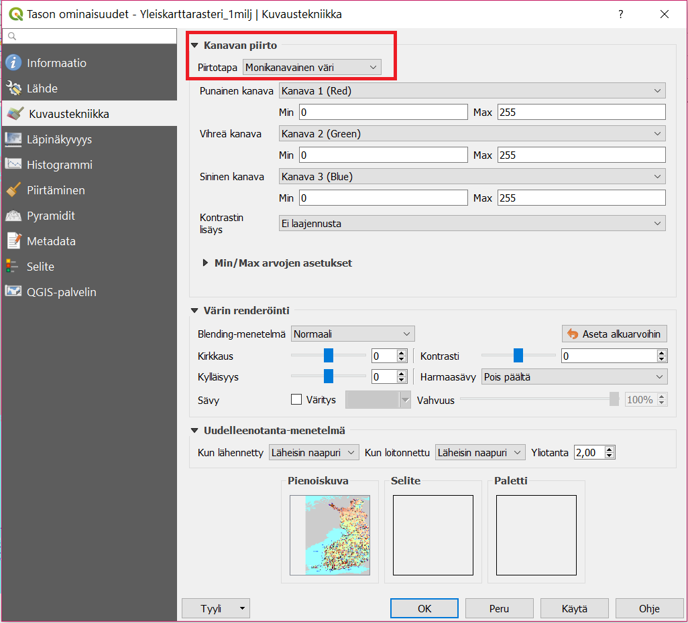
Kokeile nyt vaihtaa kanavien järjestystä. Kun painat Käytä voit tarkistaa tehdyt muutokset. Näin voit testailla eri asetuksia sulkematta Tason ominaisuudet -ikkunaa. Kun olet testaillut tarpeeksi, klikkaa OK.
6.6 Vektoriaineistojen visualisointi
Siirrytään nyt visualisoimaan vektoriaineistoja. Tarkastele kaikkia QGIS-projektiin avaamiasi vektoriaineistoja. Voit huomata, että jokaisen tason vasemmalla puolella on muoto, joka kuvastaa kyseisen tason vektorityyppiä. TieViiva on viiva-aineisto, ne_10m_populated_places_suomi on pisteaineisto ja NaturaKohde_ma on polygoniaineisto.
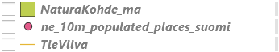
##Viiva-aineiston visualisointi Aseta TieViiva-aineisto näkyviin ja piilota muut aineistot. Avaa TieViiva-aineiston Tason ominaisuudet samalla tavalla kuin rasteriaineistollakin. Voit huomata, että vektoritason ominaisuudet ovat moniulotteisemmat kuin rasteritason. Myös Kuvaustekniikka-välilehti on täysin erinäköinen kuin rasteriaineistolla.
 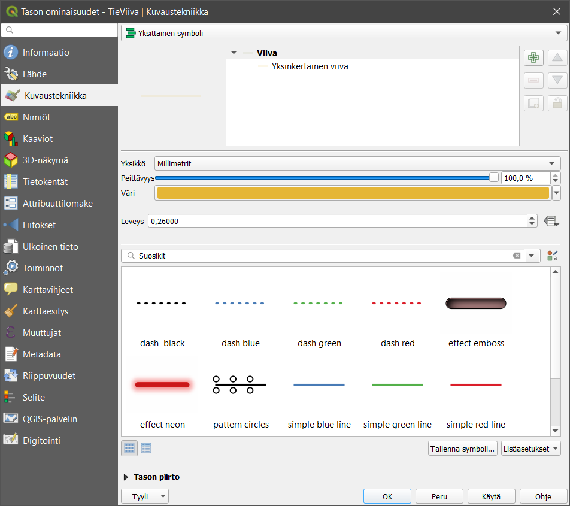
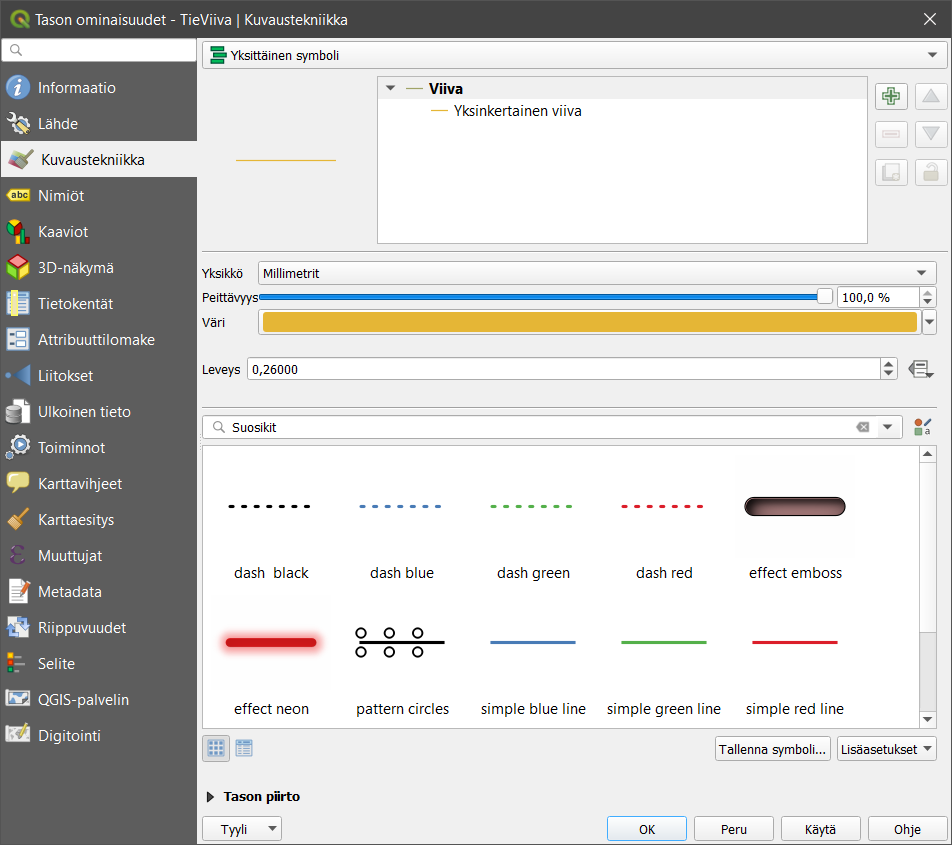
Vaihda TieViiva-aineiston Väri ja Leveys haluamaksesi ja paina lopuksi Käytä. Näin voit tarkastella tekemiäsi muutoksia sulkematta Tason ominaisuudet -ikkunaa - aivan kuten rasteriaineistossakin. Avaa vielä jokin symbolikirjasto, esimerkiksi Suosikit, ja muuta viivan tyyliksi jokin sinua miellyttävä tyyli. Paina lopuksi OK, jolloin ikkuna sulkeutuu ja TieViiva-taso näkyy nyt määrittämälläsi kuvaustekniikalla.
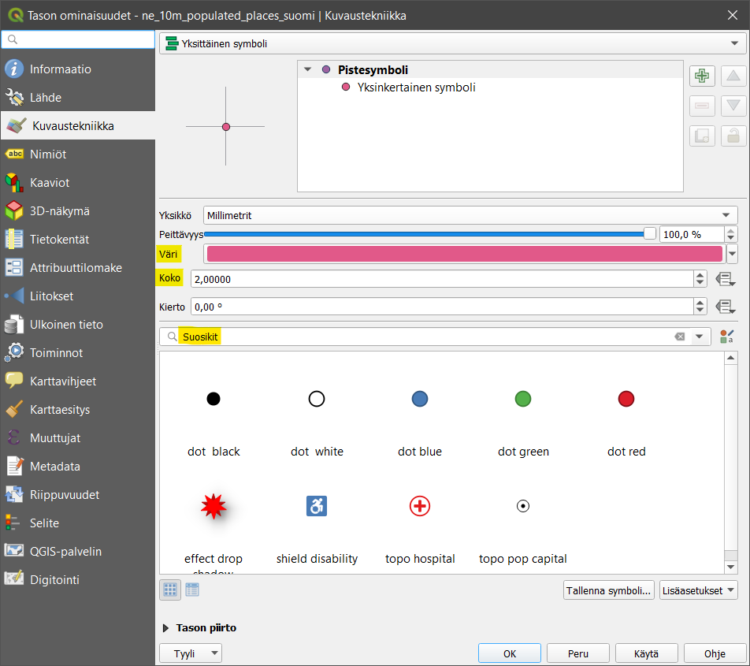
Muut paikkatietoaineistojen visualisoinnin työkalut saa käyttöön samalla tavalla: avaamalla hiiren oikealla painikkeella Tason ominaisuudet ja valitsemalla sivupalkista Kuvaustekniikka. Eri vektoriaineistotyypeillä (piste, viiva, polygoni) on erilaiset kuvaustekniikan työkalut, vaikkakin ne muistuttavat paljon toisiaan. Esimerkiksi pistetasolle ei voida tehdä samoja tyylittelyjä kuin viiva- tai polygonitasolle.
6.7 Pisteaineiston visualisointi
Visualisoidaan seuraavaksi piste-aineistoa. Aseta ne_10m_populated_places_suomi-aineisto näkyviin yhdessä TieViiva-aineiston kanssa ja piilota muut aineistot. Tämä aineisto sisältää Natural Earth -kaupunkiaineiston Suomesta. Avaa tason Kuvaustekniikka-välilehti samalla tavalla kuin äsken viivatason yhteydessä. Huomaa erot viiva- ja pisteaineiston ominaisuuksissa. Vaihda aineiston Väri ja Koko ja paina taas Käytä. Vaihda myös symbolia ja kokeile, miten kierto vaikuttaa symbolin näkymiseen.

Pisteaineistosi voi näyttää yhdessä viiva-aineiston kanssa esimerkiksi tältä:

6.8 Polygoniaineiston visualisointi
Visualisoidaan vielä polygoniaineisto. Aseta NaturaKohde_ma-aineisto näkyviin yhdessä TieViiva-aineiston ja ne_10m_populated_places_suomi-aineiston kanssa ja piilota muut aineistot. Avaa NaturaKohde_ma-aineiston Kuvaustekniikka-välilehti ja huomaa erot verrattuna viiva- ja pisteaineistojen kuvaustekniikkaan. Vaihda tason Väri ja valitse tasolle eri symboli. Voit myös kokeilla erilaisia Peittävyys-arvoja. Kun olet testannut tarpeeksi, paina OK.
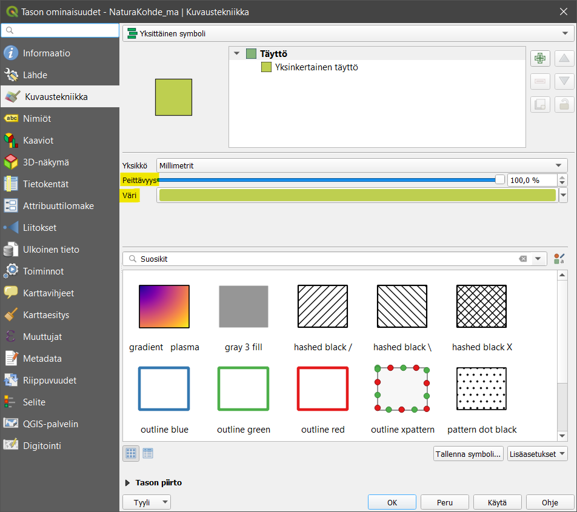
Saattaa olla, että aineistotasot peittävät toisensa vaikka siten, että polygoniaineisto peittää muut sen alle jäävät aineistot. Voit muuttaa tasojen järjestystä ja siten tasojen näkymistä raahaamalla/vetämällä tasot uuteen järjestykseen Tasot-paneelissa. Usein polygoniaineistot on hyvä jättää alimmiksi tasoiksi. Jos kartalla halutaan visualisoida jotakin rasterikuvaa, kannattaa se/ne yleensä pitää myös alimpina tasoina. Uudelleen järjestettynä karttasi tulisi näyttää tältä:

6.9 Symbolien muuttaminen
Seuraavaksi muutamme polygonien symboleja. Avaa uudelleen Naturakohde_ma-tason Tason ominaisuudet -ikkuna. Valitse Kuvaustekniikka-välilehdeltä ensin Simple fill -rivi oheisen kuvan mukaisesti:

Valitse sen jälkeen Viivan tyyli -asetukseksi Katkonainen pisteviiva. Voit määritellä viivan leveyden haluamaksesi. Lopuksi voit vielä muuttaa Peittävyys-asetukseksi 70 % (Tason piirto -asetuksista).
6.10 Mittakaavan käyttö symboleissa
Seuraavaksi määrittelemme mittakaavarajat Tieviiva-tasolle. Valitse tason Ominaisuudet > Karttanäyttö ja rastita Scale Dependent Visibility (mittakaavaperusteinen näkyvyys). Muuta sitten Pienimmäksi mittakaavaksi 1:3 000 000. Tämä tarkoittaa sitä, että kun kartan mittakaava on pienempi kuin 1:3 000 000, niin karttatasoa ei piirretä.

Ota muutokset käyttöön painamalla joko Käytä tai OK. Jälkimmäinen visualisoinnin käyttöönoton lisäksi sulkee Ominaisuudet -ikkunan. Kokeile nyt karttaikkunassa tason näkymistä eri mittakaavoilla. Mittakaavaa saat muutettua lähentämällä tai loitontamalla karttaa (esim. hiiren scroll-toiminnolla). Voit myös syöttää mittakaavan lukuna QGISin alaosassa sijaitsevassa Tilapalkissa.
6.11 Symbolitasojen muokkaaminen
Seuraavaksi muokkaamme visualisointityyliämme hieman pidemmälle. Symbologiat voivat QGISissä koostua yhdestä tai useammasta symbolitasosta (kuvassa Täyttö-kohdan alla). Esimerkiksi monikulmioiden symbolitasojen hyödyntäminen voi tuottaa hyvinkin hienovaraisen visualisoinnin. Symbolitasojen avulla voidaan määrittää monikulmion täyttämisen värit ja tyylit (esim. pistetäyttö).
Lisää uusi symbolitaso NaturaKohde_ma-tasolle. Avaa tason Kuvaustekniikka-asetukset (Tason ominaisuudet -ikkunasta) ja lisää uusi symbolitaso painamalla plussa-kuvaketta.
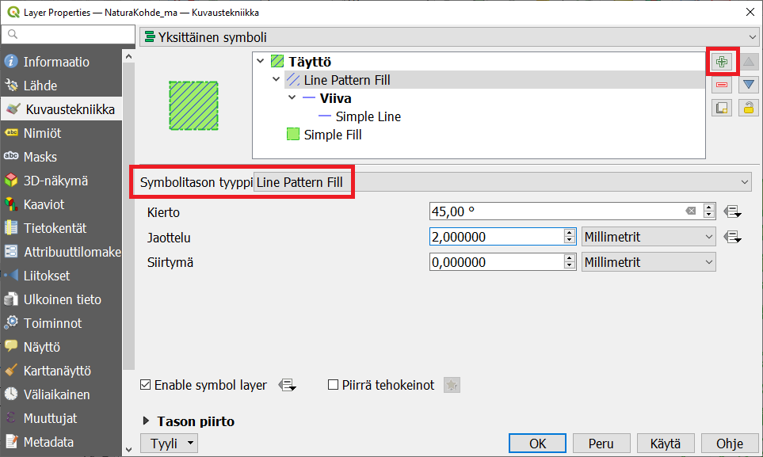
Muuta lisätyn symbolitason tyypiksi Viivakuviointitäyttö ja määrittele viivakuvioinnin kulma ja etäisyys haluamallasi tavalla. Voit myös määritellä viivakuvioinnissa käytetyn viivan leveyden ja värin valitsemalla Viiva-symbolitason tyylitasoluettelosta. Tarkista lopputulos.
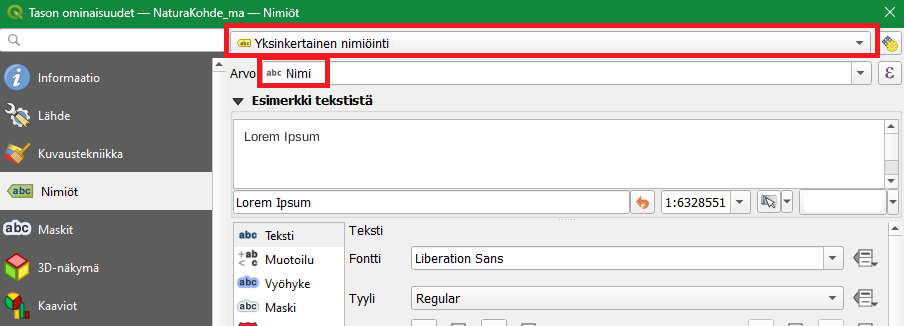
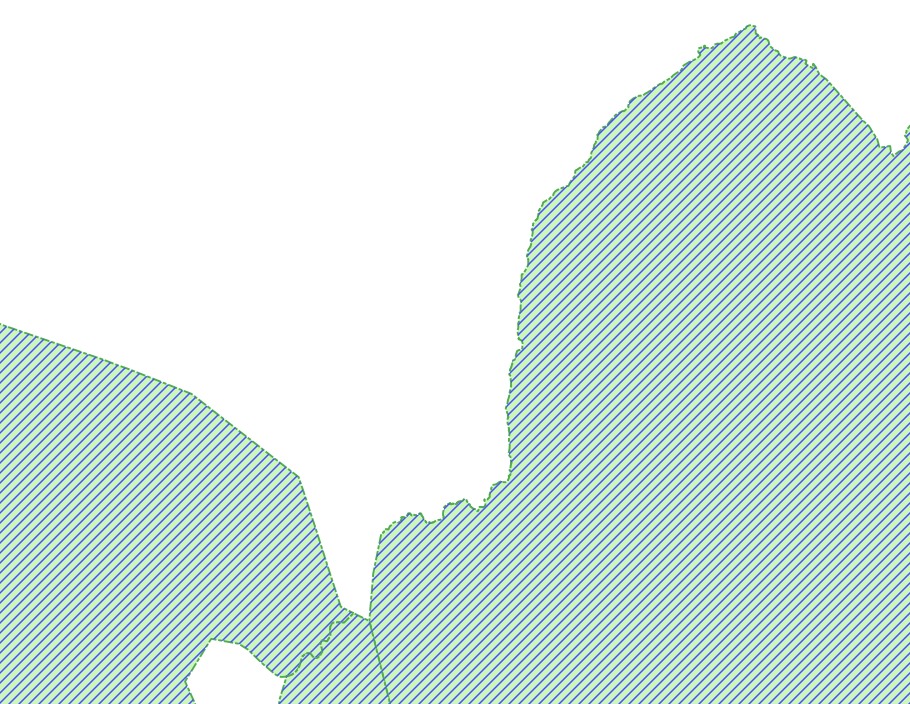
6.12 Tekstitys eli nimiöinti
QGIS-käyttöliittymässä paikkatietokohteiden tekstitykseen viitataan termillä “nimiöt” (englanninkielinen termi on “labeling”). Avaa NaturaKohde_ma-tason Tason ominaisuudet -ikkuna ja valitse Nimiöt-välilehti. Valitse Yksittäinen nimiö ja Nimiöiden perustana -alasvetovalikosta nimiöinnissä käytettävän sarakkeen nimi. Paina Käytä, niin kohteille syntyy nimiöt. Tämä nähdään nyt karttaikkunasta, johon nimiöt ovat päivittyneet.
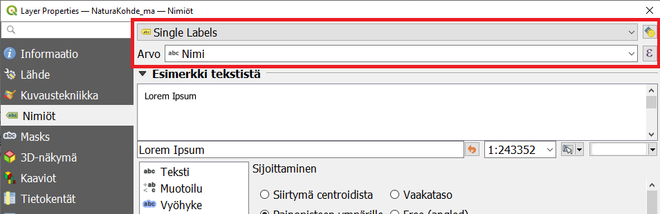
6.13 Nimiöiden tyyli- ja yleisasetukset
Nimiöiden tekstien näkymistä kartalla voi määrittää monella eri tavalla. Alla kuvaukset QGISin nimiöiden muokkaamisen alateemoista:
6.14 Teksti
Määritellään tekstin tyyli, väri ja muita yleisiä ominaisuuksia. ## Muotoilu Voit muodostaa useampirivisiä tekstejä, keskittää tekstiä ja määritellä lukujen muotoa. ## Vyöhyke Luodaan tekstiä korostavat puskurit (tekstin reunukset). ## Tausta Tekstin taustalle voi piirtää suorakulmion tai muun muodon. ## Varjo Teksteille voidaan muodostaa varjo. ## Sijoittaminen Määrittelee tekstien sijoittumista kohteiden suhteen. ## Piirtäminen Määrittelee tekstien mittakaavarajoja ja muita tekstien näkyvyyteen liittyviä asioita.
##Nimiön tekstityyli

Nimiöiden tekstien tyyleille voit asettaa esimerkiksi haluamasi fontin, tyylin ja koon. Kokeile erilaisia tekstityylejä. Kokeile nimiöiden varjostamista, minkä avulla voimme korostaa nimiöitä taustalla olevista muista karttaelementeistä. Valitse Varjo-alateema ja rastita sitten Piirrä heittovarjo. Paina Käytä, jotta näkisit tulokset kartalla. Kokeile vaihtaa asetuksia kuten siirtymä, sumennussäde, peittävyys sekä väri, ja katso miten ne vaikuttavat nimiöinnin varjoon. Huomaat muutokset kartalta tai Esimerkki tekstistä -kentästä.
Toinen työkalu tekstin korostamiseen on tekstiä ympyröivä vyöhyke. Valitse Vyöhyke-alateema ja lisää tekstille haluamasi puskuri rastimalla Piirrä tekstivyöhyke. Näin saat nimiöt erottumaan kartasta vielä paremmin. Kokeile erilaisia vyöhykkeen kokoja, värejä ja läpinäkyvyyttä.
Avaa vielä Sijoittaminen-alateema ja valitse Using perimeter (käyttäen kehää). Valitse Sallitut asemoinnit -kohdassa Viivan alla. Huomaa, että Sallitut asemoinnit -kohdassa tulee aina olla vähintään yksi kohta valittuna. Jos useampi kohta on valittu, QGIS valitsee automaattisesti parhaan vaihtoehdon jokaiselle kohteelle. Paina OK, ja huomaa, että nyt nimiöt seuraavat monikulmioiden rajoja.

Tulos voi näyttää oudolta, etenkin jos karttaikkunan mittakaavaa on asetettu ison alueen kattavaksi. Lähennä karttaa, jotta nimiöt näkyisivät johdonmukaisemmin ja pohdi, missä tapauksessa tämänkaltainen nimiöinti olisi sopivinta. Etsi vielä Sijoittaminen > Prioriteetti ja määritä se Korkeaksi. Tällä tavalla annat preferenssin muokkaamasi tason nimiöille suhteessa muiden tasojen nimiöihin ja voit näin järjestää tärkeimpien ja ei niin tärkeiden tasojen nimiöintiä. Paina vielä OK.
Psst! Yksi hyödyllinen tapa rajata nimiöitä on Piirtäminen > Kohteen valinnat ja asettaa kohtaan “*Häivytä nimiöinti kohteilta, jotka ovat pienempiä kuin**-kohtaan jokin arvo. Näin QGIS näyttää vain isoimpien kohteiden nimiöinnit.
6.15 Nimiöinnit viivatasoilla
Samalla tavalla kuin juuri määritimme nimiöinnin monikulmiotasolle, voidaan niitä määrittää muillekin vektoriaineistoille. Avaa TieViiva-tason Tason ominaisuudet -ikkuna ja aktivoi nimiöiden käyttö päälle edellisessä harjoituksessa oppimallasi tavalla. Valitse Nimiöiden perustan -kohdan alavalikosta käytettäväksi nimiöintisarakkeeksi Tienumero. Paina Käytä, ja katso muutokset. Avaa vielä nimiöiden Sijoittaminen-alateema ja rastita Seuraa viivaa -toiminto päälle. Paina Käytä, ja tarkista, että nimiöinti toimii odotetulla tavalla. Katso esimerkkiasetukset kuvasta:

Nyt nimiöt seuraavat viivoja paremmin. Huomaa myös, että kaikki nimiöt eivät nyt tule piirretyksi. Vaihda Maksimikulma kaarevien merkkien välillä -kohdan arvoja, niin pystyt muokkaamaan tekstin kaarevuuden reunaehtoja. Voit sulkea Tason ominaisuudet-ikkunan totuttuun tapaan painamalla OK.
6.16 Nimiöiden piirtäminen
Zoomaa karttanäkymä näyttämään koko aineisto klikkaamalla Zoomaa täydeksi -painiketta  . Odota hetki, että nimiöt piirtyvät. Nimiöitä on nyt liikaa karttaikkunassa, mikä vaikeuttaa kartan hahmottamista. Olisi hyödyllistä määrittää nimiöt eri mittakaavoille erikseen. Avaa taas NaturaKohde_ma-tason ominaisuudet ja valitse Nimiöt sivupalkista ja Karttanäyttö-alateema. Rastita Show all labels for this layer (Näytä kaikki nimiöt tällä tasolla [myös törmäävät nimiöt]) ja paina Käytä. Nimiöiden piirtämiseen menee hetki, koska kaikki kartalla näkyvät monikulmiot nimetään. Kun kartta on piirtynyt huomaat, ettei kannata nimiöidä kaikkia monikulmioita kyseisellä mittakaavalla. Rastita tämä asetus pois päältä ja paina Käytä. Huomaa, että oletuksena QGIS jättää piirtämättä toisiinsa törmäävät nimiöt.
. Odota hetki, että nimiöt piirtyvät. Nimiöitä on nyt liikaa karttaikkunassa, mikä vaikeuttaa kartan hahmottamista. Olisi hyödyllistä määrittää nimiöt eri mittakaavoille erikseen. Avaa taas NaturaKohde_ma-tason ominaisuudet ja valitse Nimiöt sivupalkista ja Karttanäyttö-alateema. Rastita Show all labels for this layer (Näytä kaikki nimiöt tällä tasolla [myös törmäävät nimiöt]) ja paina Käytä. Nimiöiden piirtämiseen menee hetki, koska kaikki kartalla näkyvät monikulmiot nimetään. Kun kartta on piirtynyt huomaat, ettei kannata nimiöidä kaikkia monikulmioita kyseisellä mittakaavalla. Rastita tämä asetus pois päältä ja paina Käytä. Huomaa, että oletuksena QGIS jättää piirtämättä toisiinsa törmäävät nimiöt.
Rastita päälle Mittakaavaperusteinen näkyvyys ja laita Minimimittakaava-kentän arvoksi 500 000. Paina OK. Natura-kohteiden nimiöt eivät enää näy 1:500 000 mittakaavan ulkopuolella. Lähennä karttaan, kunnes nimiöt näkyvät uudelleen. Muuta samalla tavalla TieViiva-tason piirtäminen siten, että sen nimiöt näkyvät vasta kun mittakaava on pienempi kuin 1:200 000.

6.17 Edistyneet ominaisuudet
Voit myös testata tekstien edistyneitä ominaisuuksia NaturaKohde_ma -tasolla. Voit ohjata nimiöiden tekstejä lausekepohjaisesti QGISin Lausekkeen muokkaus -työkalulla. Saat lausekkeen muodostajan auki** Nimiöiden perustana** -alasvetolaatikon vieressä olevasta painikkeesta:

Tehdään nyt nimiö, joka yhdistää tietoa useammasta kentästä. Klikkaa kuvassa näkyvästä Lausekkeen muodostaja -painikkeesta. Lausekkeen muokkaus -työkalu aukeaa.

Lausekkeen muokkaus on tehokas työkalu, jota voidaan käyttää nimiöiden muokkaamisen lisäksi myös muihin tarkoituksiin. Lauseke-kentässä on tällä hetkellä nimi, sillä valitsimme Nimi-kentän aikaisemmin Nimiöiden perustana -alasvetovalikosta. Aineistossa on myös kenttä NaturaTunn, joka sisältää alueen tunnuksen. Tehdään lauseke, joka yhdistää alueen nimen ja tunnuksen.
Kirjoita Lauseke-kenttään seuraava lauseke: > NaturaTunn || ‘’ || Nimi
Lausekkeessa esiintyy kentän nimien NaturaTunn ja Nimi lisäksi myös rivinvaihtosymboli ‘’ ja kaksi || -merkkiä, jotka yhdistävät merkkijonot yhdeksi tekstiksi.

Psst! Voit lisätä rivinvaihtosymbolin lausekkeeseen painamalla Lauseke-ikkunan päällä olevaa painiketta. Samalla tavalla voit lisätä aineistossa olevia kenttiä lausekkeeseen laajentamalla kentät ja arvot -valikon ja kaksoisklikkaamalla kentän nimeä.
Kirjoita edellä mainittu lauseke ja paina OK. Klikkaa Tason ominaisuudet -valikossa Käytä ja katso kartalta, miltä alueiden nimiöinti näyttää.
Kun olet valmis, tallenna projektitiedosto kurssihakemistoon pikanäppäimellä CTRL + T tai päävalikosta Projekti > Tallenna.
Psst! Koulutuksen jälkeen saat henkilökohtaista tukea Gispon tukipalvelusta. Lähetä kysymyksesi tai kommenttisi osoitteeseen tuki@gispo.fi!